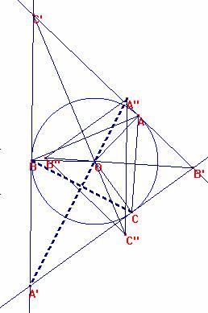

Problema 102
Sea ABC un triángulo no equilátero. Sea T su circunferencia circunscrita y O su centro. Las tangentes en A, B , C a la misma forman un triángulo A' B' C'. Sea A'' B'' C'' el homotético de A'B'C' de centro O y razón -1/2.
1.-Demostrar que ABC y A'' B'' C'' son homólgicos*, cuyo centro D de homología está sobre T.
2.- Demostrar que cada uno de los puntos A B C D pueden ser obtenidos de la misma manera que D a partir de A B C.
* Homólogicos en el sentido de Desargues: sus vértices dos a dos se encuentran sobre tres rectas que tienen un punto de concurrencia.
Rideau (2003): Le probléme de Dobbs. Documento de trabajo.
Solución de François Rideau, Maitre de
Conférences à l'Université de Paris 7.
Se van a usar números
complejos. Siempre se puede identificar el plano P mediante una semejanza
adecuada con el plano complejo C con su estructura euclidea
usual donde el círculo T se convierte en el círculo de módulo unidad. Como es
habitual se denotará el afijo de cada punto del plano P nombrado por una
mayúscula, por la letra minúscula correspondiente.
La excepción es el
afijo de O que es o y se tiene, pues: |a| = |b| = |c|=1.

El punto A’ es el
inverso del punto medio del segmento BC en relación a la circunferencia T.
Se tiene pues:
(1)
Pero sabemos que es
Se deduce que: , y por ello,
(2)
El vector A’’A tiene
pues por afijo:
(3)
siendo como de
costumbre,
las
funciones simétricas elementales de a, b y c.
Se sabe que :
La hipótesis de que el
triángulo no es equilátero se traduce en que , y en que
los puntos A y A’’ son diferentes por la ecuación
(3)
Para determinar la
intersección D de la recta AA’’ con la circunferencia T, se busca unote los
puntos U donde la mediatriz de AD corta T y se escribe
,
es decir:
Teniendo en cuenta que
, se tiene:
O sea: , y finalmente: (4) .
Pero el ser OU mediatriz de AD se traduce por la igualdad:
(5)
De done se tiene que: (6)
El afijo de D es función
simétrica de los afijos de a,b
c, demostrando así que las rectas
BB’’ y CC’’ pasan por
D, lo que demuestra el primer punto.
La igualdad (6) se
puede escribir también como:
d(a+b+c)= - (bc+ca+ab), o aún
La segunda función simétrica
elemental de a, b, c, d es nula, lo que demuestra el segundo punto.